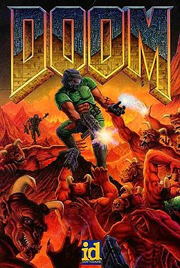

 Doom (typeset as DOOM in official documents) is a 1993 science fiction horror-themed role-playing first-person shooter video game by id Software. In Doom, players assume the role of a space marine, popularly known as "Doomguy", who must fight his way through the hordes of invading demons from Hell. The game is divided into three nine-level episodes. The Ultimate Doom, an updated release of the original game featuring the fourth episode, came out in 1995. Read more..
Unity (also called Unity3D) is a cross-platform game engine with a built-in IDE developed by Unity Technologies. It is used to develop video games for web plugins, desktop platforms, consoles and mobile devices, and is utilized by over one million developers. Unity is primarily used to create mobile and web games, but can also deploy games to consoles or the PC. The game engine was developed in C/C++, and is able to support code written in C# or javascript. It grew from an OS X supported game development tool in 2005 to the multi-platform game engine that it is today. Read more..